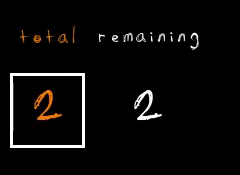

Wiki
Les joueurs¶
Les joueurs sont au nombre de 4, et chaque joueur représente un rôle spécifique dans l'équipe. S'il y a moins de 4 joueurs humains, les places restantes sont automatiquement comblées par des IA dotées d'un comportement stratégique prédéfini. Les IA sont programmées pour se comporter de manière compétitive.
Chaque joueur joue à tour de rôle en lançant un dé à 6 faces, représenté par l'image ci-dessous :

Le dé présente deux types de valeurs :
- En orange : Le nombre de coups disponibles pour le joueur, c'est-à-dire des actions comme l'utilisation d'armes ou l'interaction avec des objets.
- En blanc : Le nombre de déplacements restants, c'est-à-dire combien de cases le joueur peut avancer durant son tour.
Les joueurs peuvent se déplacer librement dans les zones déverrouillées du plateau, mais certaines zones sont verrouillées et nécessitent une carte pour y accéder. Lors de leur tour, ils peuvent également choisir de chercher des objets ou d'interagir avec d'autres joueurs ou éléments du jeu.
Objectif des joueurs¶
L'objectif des joueurs est d'atteindre la sortie en collectant des cartes et en déverrouillant toutes les zones nécessaires. Les joueurs doivent coopérer et parfois rivaliser pour réussir à s'échapper. Ils doivent aussi éviter les gardes ou les éliminer s'ils en ont la possibilité.
Les armes¶
Les armes sont des éléments clés dans le jeu, car elles permettent aux joueurs de se défendre contre les gardes. Chaque joueur peut trouver une arme lors de ses déplacements dans les zones déverrouillées. Il y a 20% de chance qu'une arme apparaisse à chaque tour dans une zone. Les armes sont représentées par une icône à côté du nom du joueur une fois ramassées.
Types d'armes¶
Pistolet : Permet d'éliminer un garde en un coup. Portée limitée à une case adjacente.
Chaque arme est utilisable une seule fois et disparaît après usage. Il est donc crucial de bien choisir quand l'utiliser.
Les cartes¶
Il existe 4 cartes jaunes dispersées dans le plateau, et elles sont indispensables pour progresser dans le jeu. Chaque carte permet de déverrouiller une zone spécifique du plateau. Les zones verrouillées sont marquées par des portes fermées, et seule la carte correspondante peut les ouvrir.
Les cartes sont des objets rares et peuvent parfois être protégées par des gardes, ce qui rend leur obtention plus difficile. Une fois une carte ramassée, elle est automatiquement assignée au joueur, qui peut choisir quand l'utiliser pour déverrouiller la zone correspondante.
Stratégie des cartes¶
Il est essentiel de coordonner les efforts des joueurs pour ramasser les cartes. Si un joueur possède une carte mais est bloqué par des gardes, il devra être secouru par ses coéquipiers, ou bien trouver un moyen de s'échapper pour atteindre la zone verrouillée.
Les gardes¶
Les gardes sont des ennemis qui patrouillent dans les différentes zones du plateau. Il y a 35% de chance qu'un garde apparaisse dans une zone au début de la partie. Leur présence ajoute un élément de danger, car ils empêchent les joueurs de se déplacer librement.
Comportement des gardes¶
Les gardes patrouillent de manière aléatoire, mais s'ils repèrent un joueur, ils commenceront à le pourchasser jusqu'à l'éliminer ou jusqu'à ce que le joueur s'échappe ou utilise une arme. Une fois qu'un garde est éliminé, il disparaît définitivement du plateau.
- Patrouilles : Ils suivent des chemins prédéterminés ou aléatoires dans les zones où ils apparaissent.
- Capture : Si un joueur est capturé par un garde sans avoir une arme pour se défendre, le joueur est téléporté sur la case de départ.
Les portes¶
Les portes sont des passages stratégiques entre les différentes zones du plateau. Elles sont verrouillées au début de la partie et ne peuvent être ouvertes qu'avec les cartes jaunes mentionnées plus tôt.
Chaque porte est liée à une carte spécifique, et les joueurs doivent s'organiser pour ouvrir les portes dans le bon ordre et au bon moment, car une fois ouvertes, elles ne se referment plus. Cela permet aussi aux gardes de se déplacer plus librement, augmentant le risque pour les joueurs.
Types de portes¶
- Portes de sécurité : Nécessitent une carte spécifique pour être ouvertes. Elles sont souvent protégées par des gardes.
Les portes sont un obstacle stratégique, et bien gérer leur ouverture est crucial pour permettre à l'équipe de progresser efficacement dans le jeu.
Conclusion¶
Le jeu repose sur la coordination et la planification des actions entre les joueurs. Chaque joueur doit prendre des décisions cruciales sur quand se déplacer, quand utiliser ses armes, et comment éviter ou neutraliser les gardes tout en collectant les cartes pour déverrouiller les zones et atteindre la sortie en toute sécurité.